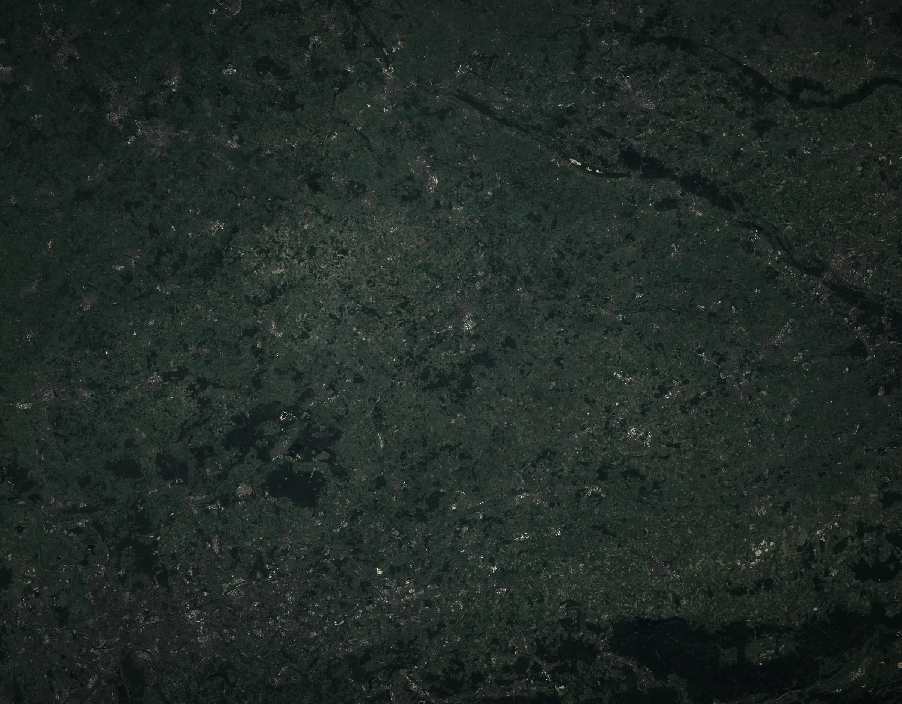
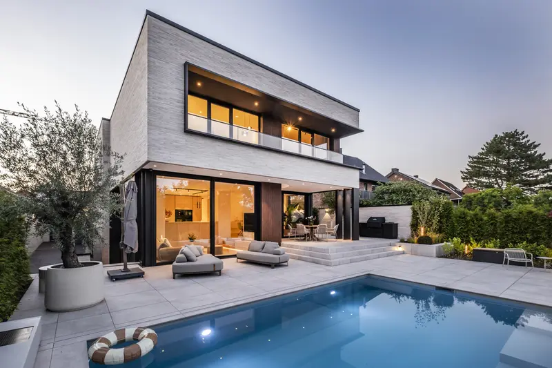
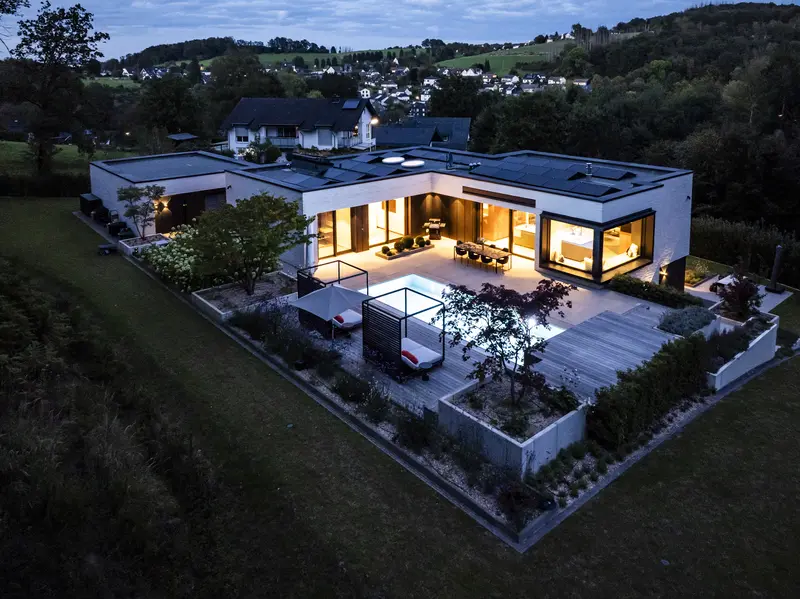
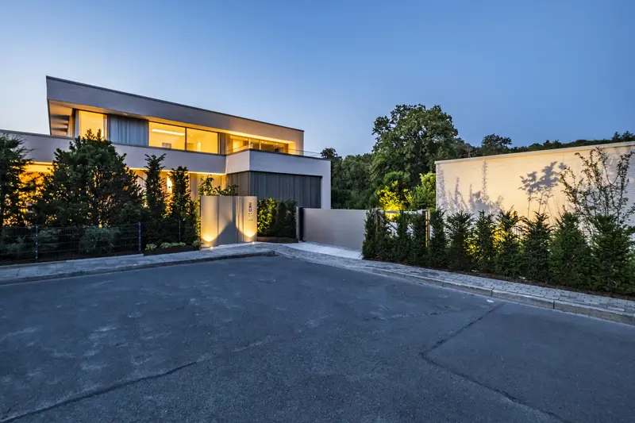
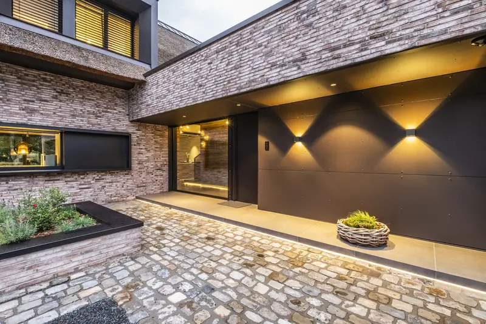
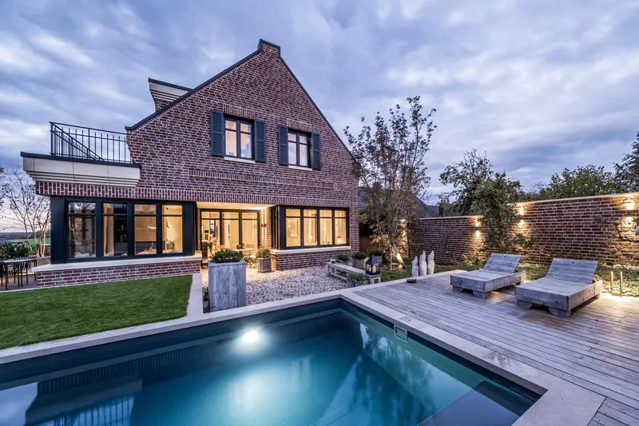

Projekte
Eine Auswahl aus über 800 Projekten.

Außerdem:

Haus mit Pool in Rheine
Zur Straße geschlossen, zum Garten ganz offen.
Projekt ansehenSatellitenbild: Sentinel-2 cloudless 2016, EOX IT Services GmbH, CC BY 4.0, enthält veränderte Copernicus-Sentinel-Daten. Orte aus Projektangaben, auf Ortsebene.

UmbauBergisches Land
Am Hang im Bergischen Land
Aus einem Bestandshaus wurde ein neues Haus.

Einfamilienhaus
Haus mit Lichtband
Weit auskragende Dächer, am Abend ein Band aus Licht.

EinfamilienhausKreis Steinfurt
Lamellenhaus im Kreis Steinfurt
Ein Haus am Hang, geformt von strengen Vorgaben.

EinfamilienhausAmmerland
Reetdach im Ammerland
Reet, Klinker und schwarzes Holz.

Einfamilienhaus
Klinkerhaus am Pool
Satteldach aus Klinker, davor das Wasser.
EinfamilienhausRheine
Haus mit Pool in Rheine
Zur Straße geschlossen, zum Garten ganz offen.